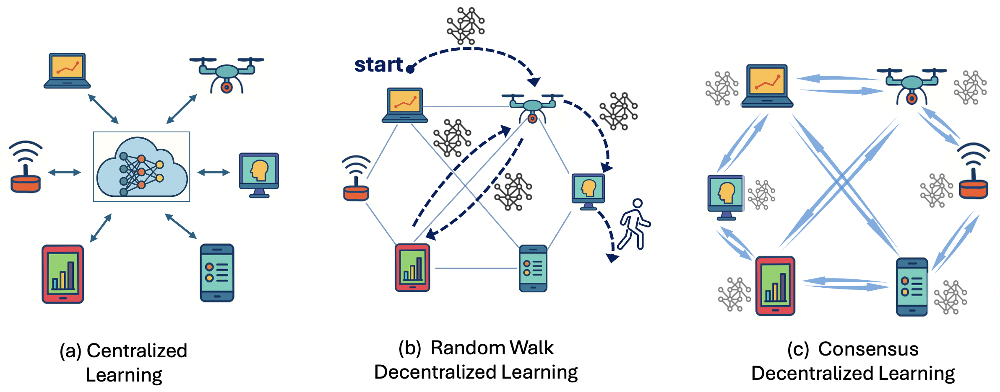

Ontology-Guided Decentralized Learning
We are designing learning and inference methods for networks that must cooperate without a dependable central coordinator or unlimited communication.
Why this matters
Many networked systems gather and process data at the edge: sensors, mobile devices, robots, and computing nodes each see only part of the environment. Sending everything to a central server is costly and can create a single point of failure. In tactical or otherwise contested settings, links may be intermittent, nodes may fail or be compromised, and decisions may still be needed in real time.
Decentralized learning avoids dependence on one coordinator, but it creates a difficult tradeoff. Consensus methods maintain a model at every node and can be robust, yet frequent synchronization is expensive. Random-walk methods pass a single evolving model through the network and communicate far less, but the process can disappear if the active node fails. Existing approaches also tend to treat every model component and message as equally meaningful.
The general problem
Thrust 3 asks how semantic knowledge can determine what moves through a network, when it moves, and how much of it must be sent. The ontological quantization and compression developed in Thrust 1 can preserve the portions of an update that matter to the task. The stochastic ontology from Thrust 2 can guide changing decisions about model partitioning, exchange frequency, aggregation, and early exit.
The proposed directions combine the communication efficiency of random walks with mechanisms for resilience. Models may be split so stable representation layers travel less often than task-specific layers. Random walks may self-duplicate when local evidence suggests that other walks have failed. Pull-based walks can request and aggregate only the neighbor information required by an ontological rule. Hybrid methods can allow continual local learning while global updates circulate intermittently.
The same principles extend to inference. Instead of storing an entire model everywhere or moving large raw inputs, different workers can execute different model segments. Ontology-guided rules can determine where to split, when an input has been processed sufficiently, and how to compress intermediate features without destroying their downstream meaning.
What we aim to establish
- Communication-efficient decentralized learning guided by task meaning rather than message size alone.
- Robustness to failures, adversarial nodes, changing topology, and limited coordination.
- Adaptive model distribution and inference across heterogeneous, resource-constrained devices.
- A feedback loop in which ontologies guide learning and distributed learning refines the ontologies.
